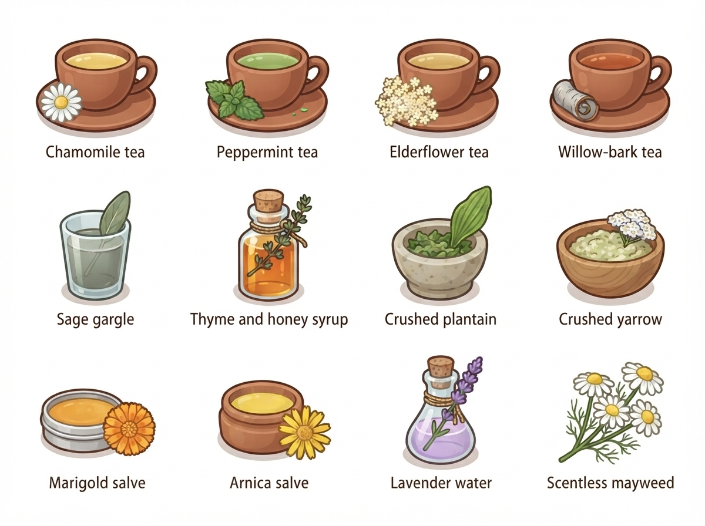
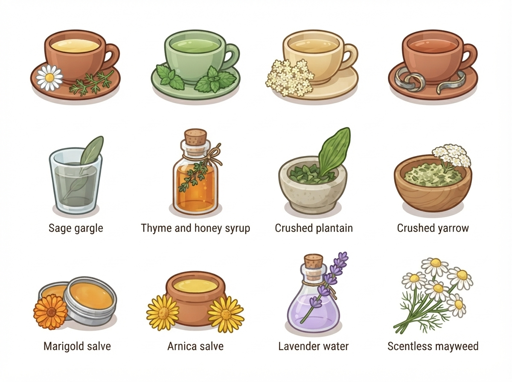
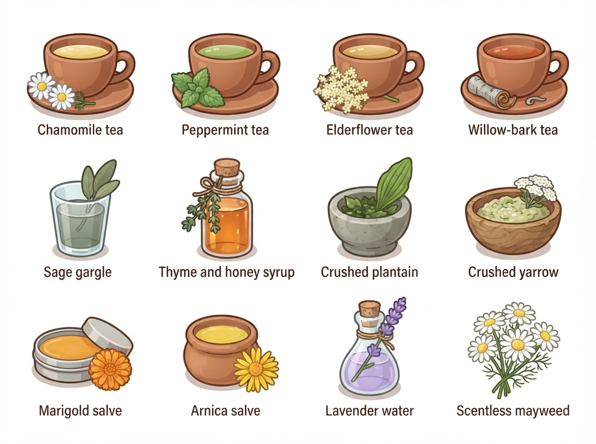

Green frame = the pick used in the game. To swap: python3 .claude/skills/openart-pictures/fetch.py pick sheet59-remedies <version>, then import again.



A sprite sheet of exactly 12 separate objects in 3 rows of 4: old-fashioned herbal home remedies as item icons, in exactly the art style of reference image 1 (use it only for the style): bright, friendly mobile-game cartoon, thick rounded dark outlines, flat colours with simple cel shading, chunky cute proportions, small soft shadow under each. Plain pure white background, evenly spaced with wide white space between them, none touching, each one solid piece with no loose petals, drops, steam clouds, sparkles or motion lines beside it. No text, no letters, no numbers, no labels (jar labels blank), no frames, no grid lines, no people, no hands. Each tea is a small brown clay cup on a saucer seen slightly from above so the tea shows, with one sprig of its herb lying on the saucer. Row 1: (1) chamomile tea: pale yellow tea, a white chamomile daisy on the saucer; (2) peppermint tea: light green tea, a dark green toothed mint leaf on the saucer; (3) elderflower tea: pale gold tea, a creamy-white elderflower umbel on the saucer; (4) willow-bark tea: reddish-brown tea, a curl of grey bark on the saucer. Row 2: (5) sage gargle: a small glass tumbler of grey-green liquid with a sage leaf leaning in it; (6) thyme and honey syrup: a small glass bottle with a cork, full of golden-amber syrup, a thyme twig tied to its neck; (7) crushed plantain: a small stone mortar with a green mash of leaves in it and one long ribbed leaf sticking out; (8) crushed yarrow: a small wooden bowl with a pale green mash and a white yarrow flower head on top. Row 3: (9) marigold salve: a small round open tin of orange-yellow salve with an orange marigold flower on the rim; (10) arnica salve: a small round open clay pot of yellow salve with a ragged yellow arnica flower on the rim; (11) lavender water: a small glass flask of pale purple water with a cork and a lavender spike tied to its neck; (12) scentless mayweed: a small bunch of white daisies with flat yellow centres and very fine thread-like leaves, as a freshly picked sprig.